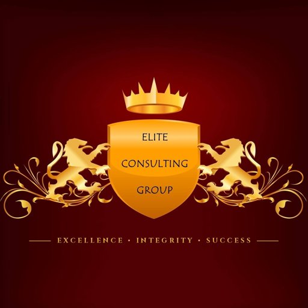

ELITE CONSULTING
Orientación, éxito y futuro en un mundo en transformación
Época de cambios profundos
Un mundo que cambia más rápido que nunca
La inteligencia artificial, la automatización y la digitalización están cambiando nuestra forma de trabajar, aprender y vivir. Muchas profesiones se transforman y surgen nuevas oportunidades para quienes estén preparados. Ya no basta con un título o un empleo: hace falta adaptarse y tomar decisiones inteligentes.
- ¿Qué profesión tendrá futuro dentro de diez o veinte años?
- ¿Qué habilidades serán realmente importantes?
- ¿Cómo puedo desarrollar todo mi potencial?
- ¿Cómo alcanzar el éxito sin perder salud y bienestar?
- ¿Cómo encontrar un propósito y una vida con sentido?
Quienes toman buenas decisiones hoy estarán mejor preparados para las oportunidades del mañana.
Nuestra misión
TU MEJOR VIDA
Cada persona posee talentos y un potencial único. Muchas veces lo que falta no es capacidad, sino orientación, conocimiento y un plan claro. ELITE CONSULTING acompaña a jóvenes y adultos para descubrir sus fortalezas y construir un futuro con más oportunidades, estabilidad y bienestar.
Esta misión nace de más de 24 años de experiencia profesional como jurista, empresario, inversor y autor especializado en éxito, desarrollo personal y prosperidad. El éxito no depende de la suerte: se construye con aprendizaje, disciplina, visión clara, planificación y acción.
Dónde podemos orientarte
Trabajo y profesión en Alemania
Preparamos a candidatos para dar el paso a un buen trabajo en Alemania.
- Orientación sobre profesión y carrera
- Preparación de tu candidatura: CV y entrevistas
- Búsqueda del puesto adecuado entre cientos de empleadores en Alemania
- Acompañamiento hasta tu llegada
Cursos de alemán y reconocimiento de títulos
Organizamos lo necesario para que tu formación cuente en Alemania.
- Organización de cursos de alemán
- Reconocimiento de títulos y diplomas
- Orientación sobre documentos y trámites
- Más información: Trabajar en Alemania
Talento y una vida mejor
Descubrir tus talentos y organizar una vida con más salud, energía y libertad.
- Descubrir y desarrollar tus talentos
- Salud mental: confianza, motivación y gestión del estrés
- Salud física: hábitos saludables, energía y descanso
- Independencia financiera: organización, ahorro y educación financiera
Éxito y mentalidad
Principios clásicos del éxito, explicados de forma práctica y conectados con nuestro podcast.
- Objetivos claros y planificación
- Disciplina, hábitos y constancia
- Mentalidad de éxito
- Ideas de los grandes autores del éxito en nuestro podcast
Orientación general — no constituye asesoramiento médico, jurídico, fiscal, financiero ni de inversión. Ver el Aviso Legal.
¿Cómo lo hacemos?
El Método ELITE
Un proceso claro y personalizado: te escuchamos, aclaramos tu dirección y te acompañamos a aprender y actuar — con mentalidad, disciplina y un plan concreto.
La orientación es general y gratuita. No sustituye asesoramiento médico, jurídico, fiscal ni de inversión.
Comprender
Escuchamos tu situación, tus objetivos y lo que te frena hoy.
Descubrir
Identificamos talentos, fortalezas y oportunidades reales para ti.
Planificar
Un objetivo sin plan es solo un deseo: definimos una estrategia clara y pasos concretos.
Aprender
Según tu plan: mentalidad, hábitos, prosperidad, profesión o emprendimiento — también con la biblioteca de audio.
Actuar
El progreso nace de la constancia y de pequeños pasos cada día.
Crecer
Una mentalidad de crecimiento para adaptarte y evolucionar a largo plazo.
Trabajar en Alemania
Medicina, enfermería y educación en Alemania
Colaboramos con cientos de empleadores alemanes en toda Alemania. Te preparamos con cursos de alemán y el reconocimiento de tu título, ya durante tus estudios.
Ver oportunidades en AlemaniaBiblioteca de audio
Escucha y aprende a tu ritmo
Los mejores podcasts sobre éxito, mentalidad y prosperidad: autodominio, poder del pensamiento, dinero, ley de la atracción, hábitos y disciplina, y grandes figuras del negocio.
Escuchar es gratis, sin registro. Elige un libro y empieza por el primer capítulo hoy.
Abrir la biblioteca de audio Apple PodcastsAsesoramiento completamente gratuito
Nuestra misión es ayudar, no vender
Queremos contribuir a un mundo mejor, ayudando a cada persona a convertirse en su mejor versión.
Toda la orientación es completamente gratuita.
Sin compromiso. Sin comisiones.
Contacto
¿Hablamos?
Cuéntanos brevemente tu situación y tus preguntas. Orientación gratuita, sin compromiso.
info@eliteconsult.euTeléfono: +34 607 018 971 (también por WhatsApp)